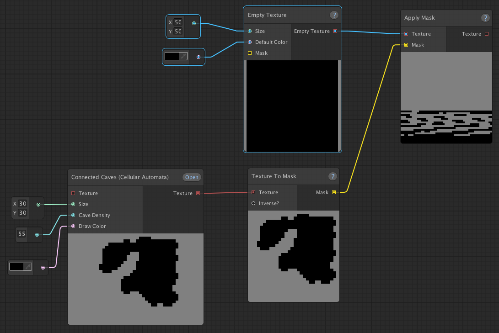

Troubleshooting
The sample project causes "An entry of type ... hasn't been assigned a value" errors.
This can happen when you install the sample project in a project that uses the 2D template.
This is because the sample project uses a different version of the 2D Tilemap Extras package than the one that comes with the 2D template of newer versions of Unity. Assets created using version 1.x are not compatible with version 2.x. So this will cause errors.
To fix this, you should install the sample project in a project that uses the default 3D template.
The Apply Mask node doesn't give the expected result
If you get a result looking like this: 
Then this is likely due to the mask being created out of a texture that is of a different size than the texture you're applying it to. The mask object doesn't store any information about what size texture it's based on. Instead it stores which points are masked or not, based on an index. Those indexes will refer to different x,y coordinates on sizes of different textures, leading to unexpected results.
NullReferenceException when running a graph
This has a couple of common causes:
- You're missing a tile/prefab (type) in your tileset/prefab set.
- You're using Named Colors, but no Named Color Set was assigned to the graph.
If you look at the stack trace in Unity's console, you should be able to find out which node the exception originates from. That should give you a hint about which of these is the cause and where it originates from.
Errors after installing the sample project
This usually happens when you try to install the sample project by manually importing the Samples.unitypackage file, in which case the sample project's dependencies won't get installed. Please make sure you follow the instructions described in the sample project section of the manual.
If you've followed the instructions, but the installer is still giving you problems, you can try installing the sample project manually.
If you're still having issues and you're still having issues, please reach out through any of the channels described in the support section.
Unknown managed type referenced when loading a graph
This error will occur when a node class has been renamed, moved to a different namespace or deleted while still in use. The issue and possible solutions are described here.
Some hexagonal tilemap set entries look deformed after stamping them onto a tilemap
You can solve this by adding a Map Graph Tilemap Prefab component to the affected tilemap entry and enabling the Lock Shape option.
If you want to know more about why this happens and how this solves the issue, you can check out this forum post: https://forum.unity.com/threads/released-map-graph-node-based-random-map-generation.944568/#post-6681352
StackOverflowException when running a graph containing a Process Graph node
This happens when graphs try to process each other. For example, say you have Graph A with a Process Graph node that processes Graph B and Graph B has a Process Graph node that refers back to Graph A. This will result in an endless loop of the graphs trying to process each other.
In order to solve this, please make sure that no circular references like this exist within your graphs.
Maps look bad when generated using Unity rule tiles
This can happen whenever you're working with an "incomplete" spritesheet. Please take a look here, to see what that means and how you can resolve it.
Same static seed, but different output
If you're using your own custom nodes, it's likely that you're not using the Rng object to generate your random numbers. This section will show you how to generate random numbers without breaking support for static seeds.
Can't add a selection of nodes to a group
If you're unable to add a selection of multiple nodes, but are able to add single nodes, to a group node, please read this section.
My custom node view's preview image doesn't work anymore after updating to v1.14
Due to the addition of the multi-threading and pooling systems, the old way of adding a preview image to a node view could, unfortunately, no longer work. Please take a look at the creating your own node views page to see the current method of adding the preview images.
My output parameter of type GameObject[] only contains nulls instead of the expected objects
This happens when you attempt to pass the GameObjects, generated by the Texture To GameObjects node, to an output parameter.
The reason for this limitation is described in the node index.
I've created a custom node view and now my build is broken.
If you're getting 'The type or namespace name 'Editor' does not exist in the namespace' errors, this might be because your node view is in a folder that is included in the build. However, the node view should be editor-only. Read more on how to fix this here.
Your issue not mentioned here?
If you're running into any issues not described here, please reach out through any of the channels described in the support section!